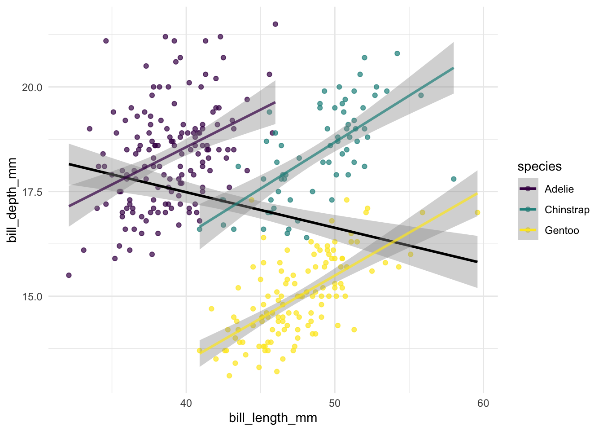
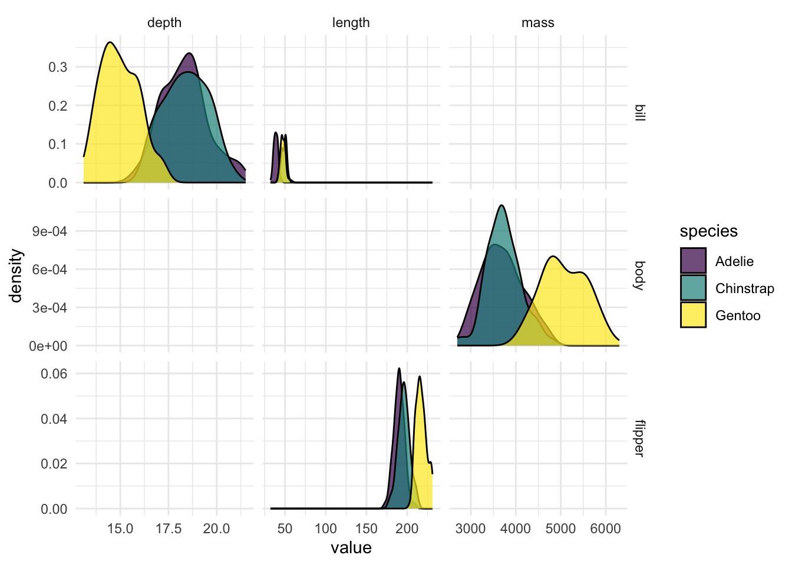

Palmer penguins
We can write text as normal, interspersed with code that outputs something. We can choose to have the code shown or hidden, or provide the reader with the option to see the code if they wish. We can also reference the figures Figure 1 and Figure 2
And the order of the figures does not really matter. If you change the order to the figures, but keep their labels, no references will be broken in the report. We can also incorporate text derived from data to look as if it were “normal” text. Like the number of rows in the data being 344, and the number of female penguins being 165. We can also add footnotes1, and they will keep themselves numbered and placed correctly2

A summary of the observed penguin data can be found in Table 1. For this cross-reference to work, we need to have the tbl- prefix in the label name of the chunk that creates the table. The number of the table will update if another table appears before it, meaning you no longer need to deal with number your content correctly.
| name | species | Mean | SD | Min | Max | N |
|---|---|---|---|---|---|---|
| bill depth mm | Adelie | 18.346 | 1.217 | 15.5 | 21.5 | 151 |
| bill depth mm | Chinstrap | 18.421 | 1.135 | 16.4 | 20.8 | 68 |
| bill depth mm | Gentoo | 14.982 | 0.981 | 13.1 | 17.3 | 123 |
| bill length mm | Adelie | 38.791 | 2.663 | 32.1 | 46.0 | 151 |
| bill length mm | Chinstrap | 48.834 | 3.339 | 40.9 | 58.0 | 68 |
| bill length mm | Gentoo | 47.505 | 3.082 | 40.9 | 59.6 | 123 |
| body mass g | Adelie | 3700.662 | 458.566 | 2850.0 | 4775.0 | 151 |
| body mass g | Chinstrap | 3733.088 | 384.335 | 2700.0 | 4800.0 | 68 |
| body mass g | Gentoo | 5076.016 | 504.116 | 3950.0 | 6300.0 | 123 |
| flipper length mm | Adelie | 189.954 | 6.539 | 172.0 | 210.0 | 151 |
| flipper length mm | Chinstrap | 195.824 | 7.132 | 178.0 | 212.0 | 68 |
| flipper length mm | Gentoo | 217.187 | 6.485 | 203.0 | 231.0 | 123 |
| species | island | term | estimate | std.error | statistic | p.value |
|---|---|---|---|---|---|---|
| Adelie | Biscoe | (Intercept) | 21.026 | 5.238 | 4.014 | 0.000 |
| Adelie | Biscoe | bill depth mm | 0.977 | 0.285 | 3.434 | 0.001 |
| Adelie | Dream | (Intercept) | 18.343 | 4.662 | 3.935 | 0.000 |
| Adelie | Dream | bill depth mm | 1.104 | 0.255 | 4.332 | 0.000 |
| Adelie | Torgersen | (Intercept) | 28.588 | 5.774 | 4.951 | 0.000 |
| Adelie | Torgersen | bill depth mm | 0.562 | 0.313 | 1.799 | 0.078 |
| Chinstrap | Dream | (Intercept) | 13.428 | 5.057 | 2.655 | 0.010 |
| Chinstrap | Dream | bill depth mm | 1.922 | 0.274 | 7.015 | 0.000 |
| Gentoo | Biscoe | (Intercept) | 17.230 | 3.282 | 5.250 | 0.000 |
| Gentoo | Biscoe | bill depth mm | 2.021 | 0.219 | 9.245 | 0.000 |
| Models were run independently on data from the different island and species. |